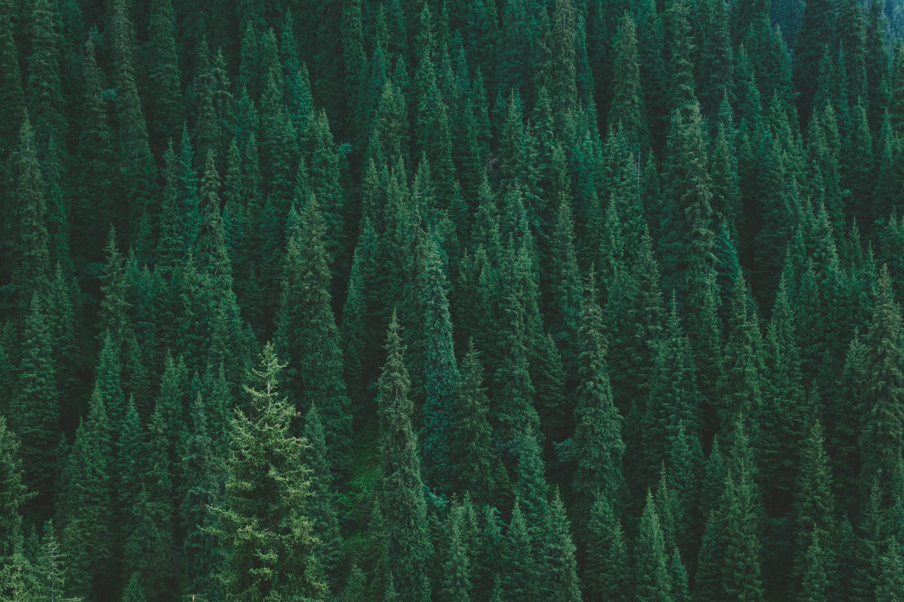
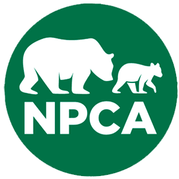
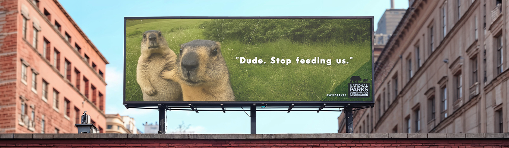
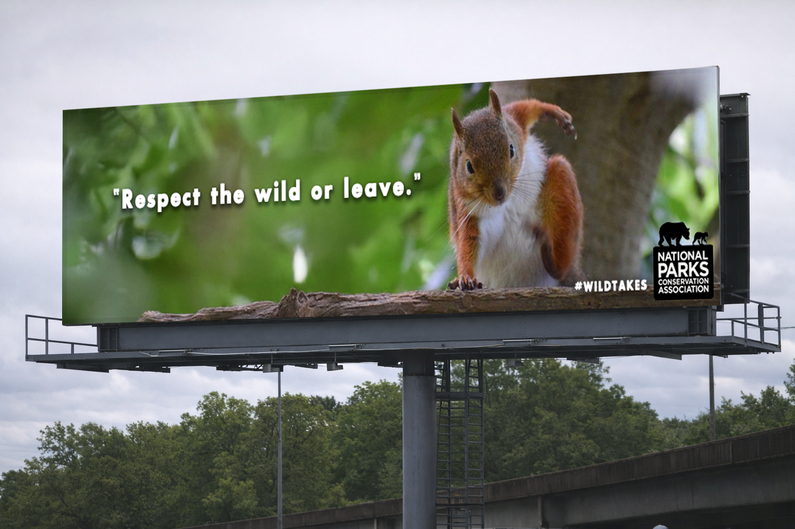
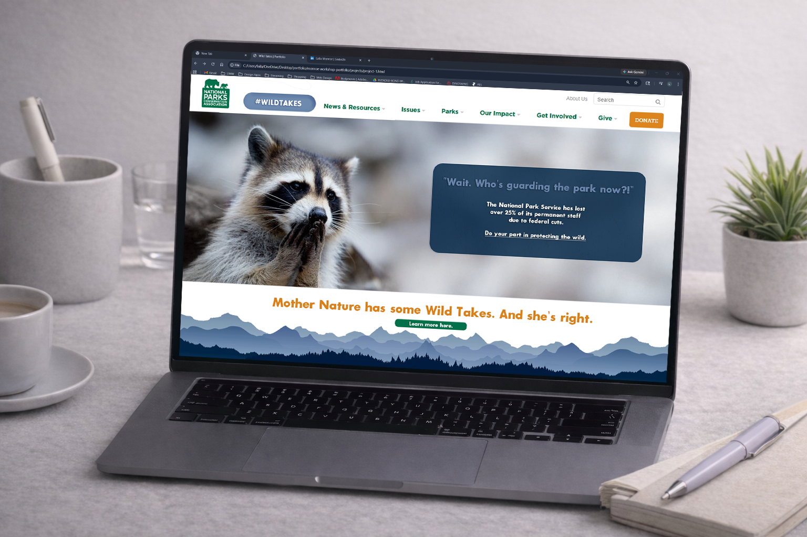

Audience
Gen Z and Millennial audiences who are socially aware, visually fluent, and more likely to respond to messaging that feels real instead of overly polished.


Speculative Campaign / Art Direction
A bold mockup campaign for the National Parks Conservation Association designed to make environmental advocacy harder to ignore.
Wild Takes is a speculative mockup campaign created for the National Parks Conservation Association. The project rethinks how environmental advocacy can connect with younger audiences by using irony, sharp copy, and disruptive visuals instead of conventional conservation messaging.
Rather than framing national parks as distant scenic backdrops, Wild Takes presents them as vulnerable spaces affected by funding cuts, policy decisions, and public neglect.

The Challenge
Traditional environmental campaigns often rely on polished nature imagery and familiar language around preservation. While effective in some spaces, that tone can feel distant or repetitive for younger audiences who are constantly flooded with content. As global warming, pollution, and political policies have impacted treasured wildlife.
Wild Takes explores a more confrontational direction, one that feels culturally aware, visually sharp, and emotionally immediate for needed conversations around wildlife preservation.


Creative Strategy
Gen Z and Millennial audiences who are socially aware, visually fluent, and more likely to respond to messaging that feels real instead of overly polished.
Bold, sarcastic, disruptive, and emotionally charged. Wild Takes avoids soft language in favor of sharper visual and verbal contrast as boldness is its strength.
This audience, Millennials and Gen-Zers are more likely to pay attention when the consequences feel immediate, uncomfortable, and impossible to ignore.
Reframe national park advocacy in a way that feels contemporary, culturally aware, and visually powerful enough to break through fatigue. Wild Takes was not made to blend in an oversaturated topic like nonproft sectors.
Visual Direction
The visual system leans into contrast, oversized type, dark humor, and editorial-style composition. Focusing on word play and meme-focused visuals. Instead of celebrating nature in a romantic way, I wanted to use Wild Takes to present a more uncomfortable truth: these spaces are not guaranteed.
Each piece was built to feel striking on its own while still working as part of a larger message. They are easily shareable and striking independantly and as one.


Takeaway
Wild Takes challenged me to combine strategy, visual disruption, and cultural relevance in one campaign system. It pushed me to create advocacy work that feels less expected and more emotionally direct. Additonally, I have a passion for outdoor activies such as camping and backpacking. So I often visit these National Parks, that are protected by the National Parks Conservation Association. I value a healthy ecosystem that is sustainable to all wildlife, while protecting our treasured parks that make the United States great.
It also reflects my broader creative approach inclduing bold ideas, strong visual worlds, and design that communicates something with real tension behind it. Also, it created curisouty in teh culutre marketing industry, as this would be considered a form of just that. I enjoy creating powerful conversation starters, work that makes you think, and memorable.